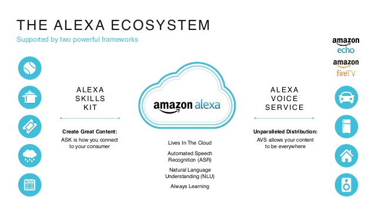

Artificial Intelligence
What is Artificial Intelligence (AI)?
According to Oxford Living Dictionary, artificial intelligence (AI) is defined as "The theory and development of computer systems able to perform tasks normally requiring human intelligence, such as visual perception, speech recognition, decision-making, and translation between languages." Any device that can percieve its environment and take actions in order to complete a goal is considered to have artificial intelligence. AI can range from simple digital assistants located in many phones to highly complex machines that have high amounts of intelligence.
Artificial intelligence is officially defined as an inanimate machine that possesses cognitive abilities, allowing it to somewhat think for “itself”. AI (Artificial Intelligence) can range from the simple digital assistant on your phone to the highly complex programs that have more processing power than a 1000 people. AI is a specially designed program that can improve its code by learning and growing, allowing it to be able to complete more complex tasks. High level artificial intelligence programs start off in an almost fetal state and grow and develop higher thinking, similar to human development.The potential of that artificial intelligence possesses in real world situations would be immense. Companies could buy an AI that could intuitively barter, make deals, or sell products. Artificial Intelligence could be used to always successfully create a deal because of its ability to calculate complex problems in a second, and would be able to accurately predict what the other person is thinking. Artificial intelligence programs have the ability to be able to buy or sell stocks with the accuracy of knowing what will happen to the stock and when it will rise or fall. An AI could trade with the accuracy of an inside trader or someone who knows the future of the stock. The person with the strongest AI program could earn billions of dollars in profit with only a minutes investment.
 Current Artificial Intelligence Technology
The Future of Artificial Intelligence
AI has been changing the lives of humans for years, and will continue to do so for years into the future. Many people have unique opinions on the future of artificial intelligence. Stuart Russell, professor of computer science at University of California, Berkeley, states that AI will help humans solve many problems including global warming. Pieter Abbeel believes that artificial intelligence will keep humans safer from traffic accidents, natural disasters, and nuclear meltdowns. Other people believe that AI will improve medical care, revolutionize the way we live and work, and open up new worlds to explore. AI will have many postive impacts on the future, but there are also some disadvatages to using AI. Jobs will be taken away from people and given to AI that can do the same job more effiiently. Also, energy consumption will increase dramatically due to AI systems that use large amounts of power. AI will be an enormous help to humans in the future and will be used and improved for many years to come.